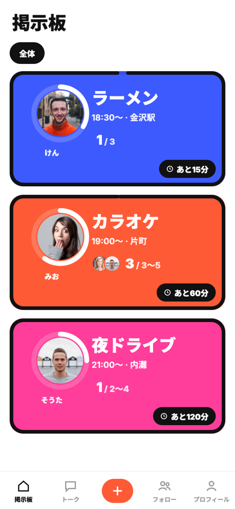
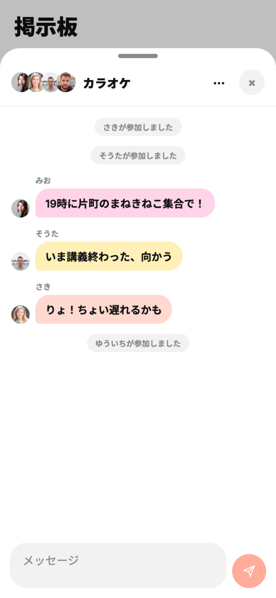
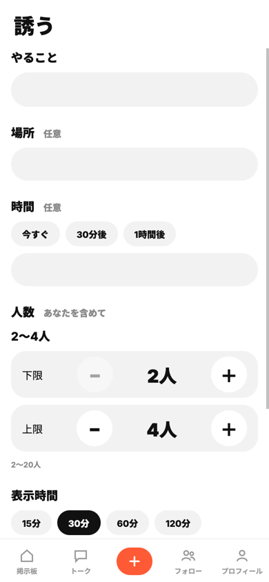

このゆびとまれ
「今から遊ばない？」を、LINE で一人ずつ誘わずに。募集を出すと友達の掲示板に並び、行ける人だけが主催者のアイコンを右にスワイプして参加します。断る操作はなく、締切が来れば募集は自然に消えます。
**デモ: https://kz2611.pages.dev**（スマートフォンのブラウザ向け）
製品概要
背景(製品開発のきっかけ、課題等）
「ちょっと遊びたい」と思っても、LINE の DM やグループで誘うのはためらいがちです。チームで出し合った理由は次の4つでした。
| 誘う前にためらう理由 | 具体的には |
|---|---|
| 個別に誘いづらい | 暇か聞くだけの連絡を送りにくい |
| 返信のラグ | 気づかない／様子見で返さない／一番手で断りたくない |
| 断る・集まらない気まずさ | 断りづらい、誰も来ないと悲しい |
| メンツが分からない | 誰が来るか分からないと行きにくい。人が集まるなら行く |
製品説明（具体的な製品の説明）
| 理由 | このゆびとまれでは |
|---|---|
| 個別に誘いづらい | 一人ずつ誘わず、友達全体かグループに募集を出すだけ |
| 返信のラグ | 返事を待たない。表示時間（15〜120分）が過ぎれば自然に消える |
| 断る気まずさ | 断るボタンがない。行ける人だけがスワイプする。人数がそろえば自動で締切 |
| メンツが分からない | カードに参加者のアイコンと人数（例 3 / 3〜5）。参加前に誰が来るか見える |
| 掲示板 | チャット | 誘う |
|---|---|---|
 |
 |
 |
特長
1. 主催者のアイコンを右へスワイプするだけで参加
主催者の丸を指で右へ動かすと参加。参加するとアイコンが右、内容が左に入れ替わり、参加済みが一目で分かります。左へ戻せば取り消し。主催者は左へスワイプで掲示を取り消せます（確認つき）。
2. 2つのゲージで「あと何分・あと何人」
カードの外枠が残り時間（時計回りに減り、残り10分で黄色）、主催者アイコンの縁が集まった人数。文字を読まなくても締切と集まり具合が分かります。
3. 気まずさが残らない終わり方
断る操作がない／表示時間で自然に消える／上限の人数で自動終了。満員の募集は、参加していない人の掲示板から消えます。
解決出来ること
- 一人ずつ誘う代わりに、友達やグループへ一度に声をかけられる
- 返信を待たずに、行ける人だけで集まりが決まる
- 断らなくてよいので、誘う側も誘われる側も気が楽
- 参加前にメンツと人数が分かる
今後の展望
- アプリを閉じている友達にも届くプッシュ通知
- iOS / Android アプリとしての配布（Expo で同じコードから作れる構成）
- 実際に使ってもらい、LINE で誘う場合と比べて集まるまでの時間や気軽さを確かめる
注力したこと（こだわり等）
- 指で操作する前提の UI: スワイプとタップ・縦スクロールの区別、親指で届く下タブ中央の「誘う」
- 見えてはいけない人には見せない: 募集・チャット・プロフィールを見てよいかは、画面ではなくサーバー側で判定（友達か、グループのメンバーか、参加者か）
- 同時に押されても壊れない: 残り1枠に2人が同時に参加しても定員を超えない
- Issue → PR → CI（型チェック・画面とAPIのテスト）→ マージで自動公開、という流れでチーム開発
開発技術
活用した技術
API・データ
- Cloudflare Pages Functions（API）
- Cloudflare D1（SQLite）
- Web Crypto API（パスワードのハッシュ化）
フレームワーク・ライブラリ・モジュール
- Expo / React Native / React / TypeScript
- react-native-web
- react-native-svg、expo-image-picker / expo-image-manipulator
- GitHub Actions（CI と自動公開）
デバイス
- スマートフォン・PC の Web ブラウザ
独自技術
ハッカソンで開発した独自機能・技術
- スワイプで参加・取り消し・掲示取り消しを切り替えるカード: 参加状態で主催者アイコンの位置と使える操作が変わり、処理中・失敗時は元の位置に戻る —
app/src/components/EventCard.tsx - 定員と自動終了を1回の処理で判定: 「今の人数が上限未満のときだけ」参加を追加する1つの SQL で同時参加でも定員を超えず、上限に達したら同じ処理の中で募集を終了 —
app/functions/lib/events.ts、テストapp/scripts/tests/test_events.py - 見てよい人の判定をサーバーに集約: 主催者・参加者・友達・グループのメンバーだけが募集を見られる —
app/functions/lib/core.ts - 残り時間ゲージと人数リング —
app/src/components/EventCard.tsx
開発者向けの情報は CONTRIBUTING.md にあります。